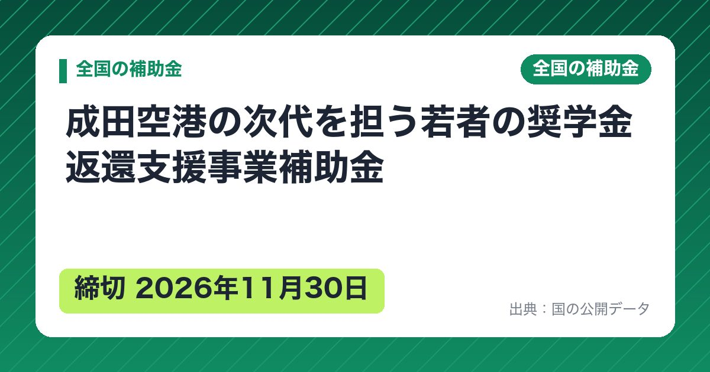

成田空港の次代を担う若者の奨学金返還支援事業補助金

締切 2026年11月30日｜上限 要確認
成田空港内で働く若者の奨学金返還を支援する企業等に対して補助金を交付します。
概要
| 対象地域 | 成田国際空港の区域において現に事業を営み、従業員に対する奨学金返還支援制度を設けている事業者であれば、所在地は問いません。 |
|---|---|
| 補助上限額 | 要確認 |
| 補助率 | 1/2 |
| 受付期間 | 2026年9月30日 〜 2026年11月30日 |
| 対象の従業員数 | 従業員数の制約なし |
| 利用目的 | 人材育成を行いたい / 雇用・職場環境を改善したい |
| 対象業種 | 漁業 / 建設業 / 製造業 / 電気・ガス・熱供給・水道業 / 情報通信業 / 複合サービス事業 / サービス業（他に分類されないもの） / 分類不能の産業 / 農業、林業 / 鉱業、採石業、砂利採取業 / 運輸業、郵便業 / 卸売業、小売業 / 金融業、保険業 / 不動産業、物品賃貸業 / 学術研究、専門・技術サービス業 / 宿泊業、飲食サービス業 / 生活関連サービス業、娯楽業 / 教育、学習支援業 / 医療、福祉 |
広告補助金の申請には決算書・帳簿が必要です。会計ソフト・開業の手続きの例：
・やよいの青色申告オンライン  （個人事業主の確定申告に）
（個人事業主の確定申告に）
・無料の確定申告自動化ソフト マネーフォワード クラウド確定申告  （確定申告をかんたんに）
（確定申告をかんたんに）
・無料の会計自動化ソフト マネーフォワード クラウド会計  （法人・個人の会計を自動化）
（法人・個人の会計を自動化）
・補助金なら、パソコンとセットでお得に導入【freee会計】  （補助金を使う導入プランあり・詳細は公式で）
（補助金を使う導入プランあり・詳細は公式で）
・開業届作成するなら【弥生のかんたん開業届】  （創業補助金の前に個人で開業する方へ）
（創業補助金の前に個人で開業する方へ）
・会社設立を無料で始めるなら【弥生のかんたん会社設立】  （法人を作る方へ）
（法人を作る方へ）
公募の内容（原文の抜粋）
■目的・概要
成田国際空港の区域で働く若者を雇用し、その若者の奨学金返還を支援する事業者に対して、支援額の一部を補助します。
本補助金は、奨学金返還支援を行う事業者の拡大や採用力の強化、若者の経済的負担の軽減を図り、成田空港への就労・定着及び成田市への移住・定住を促進することを目的としています。
【令和8年度の概要】
補助対象期間：令和8年4月1日から令和8年9月30日まで
補助率：事業者が行った奨学金返還支援額の2分の1
補助上限額：支援対象者1人につき月額8,000円
対象人数：1事業者につき新規5人まで（継続支援対象者は別枠）
補助期間：支援対象者1人につき、事業者が奨学金返還支援を開始した月から最大60か月
■補助対象者・応募資格
成田国際空港の区域において現に事業を営み、従業員に対する奨学金返還支援制度を設けている事業者であって、補助対象期間中に、支援対象者に対して次のいずれかの方法により奨学金返還支援を行っている事業者が対象です。
【手当支給】
従業員に対し、奨学金の返還に要する金額に相当する額を手当として支給するもの
【代理返還】
従業員に代わり、事業者から奨学金貸与機関へ直接送金するもの
なお、次のいずれかに該当する事業者は対象となりません。
国、地方公共団体その他これらに準ずる者から出資を受けている者
奨学金の返還支援について、国、地方公共団体その他これらに準ずる者から他の補助金、交付金その他の財政的支援を受けている者
役員その他これに相当する者が、成田市暴力団排除条例に規定する暴力団員等と認められる者
政治活動又は宗教的活動を目的とする者
市税を滞納している者
その他、市長が不適当と認める者
■支援対象者
補助の対象となる従業員は、申請日時点で奨学金返還支援制度を設けている事業者の正社員であり、次の要件をすべて満たす方です。
【雇用時期】
令和8年4月1日から令和8年9月30日までの間に、対象事業者に正社員として雇用された方
前年度以前から本補助金による支援を受けている継続支援対象者
【年齢】
正社員として雇用された日において29歳以下であること。
【過去の支援状況】
過去に本補助金に係る奨学金返還支援を受けていないこと（※継続支援対象者を除きます。）。
【奨学金を返還していること】
補助対象期間中に、貸与された奨学金を主たる債務者として実際に返還していること（事業者による代理返還を含みます。）。
奨学金返還について、国、地方公共団体等から他の補助金、交付金その他の財政的支援を受けていないこと。
【就業場所】
補助対象期間中、成田国際空港の区域を主たる就業の場所として勤務していること。
※「主たる就業の場所」とは、雇用契約書又は労働条件通知書に「就業の場所」として記載されている場所や、業務を開始し、又は終了する場所など、主として業務に携わる場所をいいます。
【居住地】
補助対象期間中、成田市内に居住し、成田市の住民基本台帳に記録されていること。
【雇用保険】
雇用保険の被保険者であること。
【市税】
市税を滞納していないこと。
■対象となる補助金
就学時に貸与を受けた次の奨学金が対象です。
独立行政法人日本学生支援機構が貸与する奨学金
地方公共団体、大学、公益法人、民間企業等が貸与する奨学金
その他、市長が特に必要と認めるもの
ただし、成田市が貸与する奨学金及び返還を免除される奨学金は対象となりません。
■補助金額
支援対象者1人につき、補助対象期間中に事業者が行った手当支給又は代理返還に要した経費の2分の1を補助します。
ただし、支援対象者1人につき月額8,000円が上限です。
また、算定した補助金額に1,000円未満の端数がある場合は切り捨てます。
補助対象となる支援対象者は、1事業者につき新規5人までです。継続支援対象者がいる場合は、その人数に5人を加えた人数まで対象となります。
支援対象者1人当たりの補助対象期間は、事業者がその方への奨学金返還支援を開始した月から最大60か月です。
■申請方法
申請は、Jグランツによる電子申請で受け付けます。
申請に当たっては、交付申請書、事業報告書のほか、雇用契約書又は労働条件通知書、雇用保険関係書類、奨学金の返還状況や事業者による支援実績を確認できる書類などの提出が必要です。
必要書類や各要件の詳細については、下記の成田市ホームページをご確認ください。
■問合せ先
成田市 企画政策部 企画政策課
〒286-8585 千葉県成田市花崎町760番地
電話番号：0476-20-1500
メールアドレス：kikaku@city.narita.chiba.jp
■参照URL
https://www.city.narita.chiba.jp/business/page0101_00103.html
広告
全国のほかの補助金
- 「グリーンイノベーション基金事業／次世代型地熱技術の開発」の公募（締切 2026年11月20日）
- 令和７年度（補正予算）地域脱炭素実現に向けた具体的施策実装支援事業（四次公募）（締切 2026年11月20日）
- 令和８年度地域脱炭素実現に向けた具体的施策実装支援事業（締切 2026年11月20日）
- 【三次公募】令和８年度 天然ガス利用設備による強靱性向上対策事業費補助金（締切 2026年11月20日）
- エイジフレンドリー補助金（締切 2026年11月20日）
- 「太陽光発電導入拡大等技術開発事業」の第3回公募（締切 2026年11月25日）
- 【農林水産省】中山間地域所得確保推進事業（締切 2026年11月25日）
- 「ポスト5G情報通信システム基盤強化研究開発事業（社会課題解決に向けた量子コンピュータ次世代機開発・実証の加速）」（g12-2：部素材）の追加公募（締切 2026年11月26日）